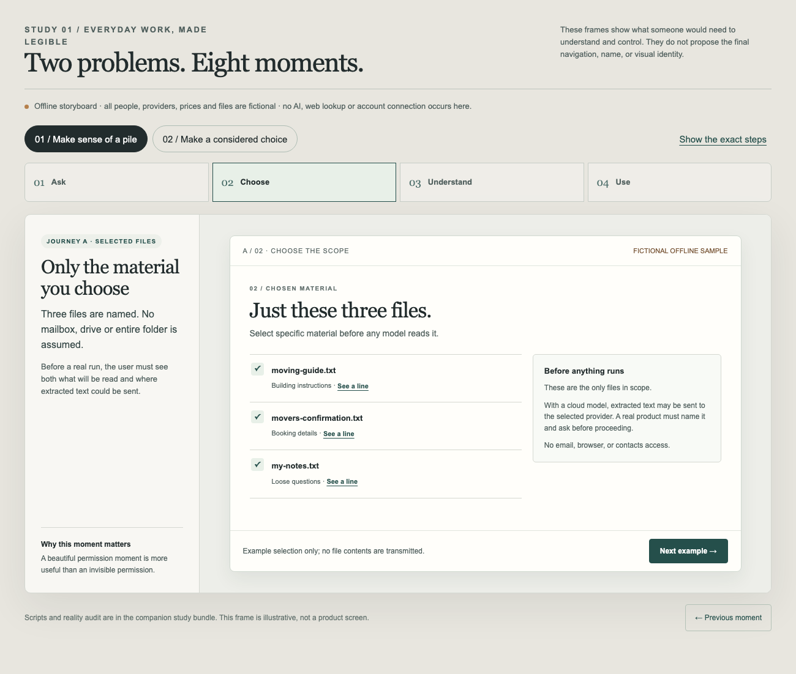

02 / Active research & prototyping
Make AI
visible.
A visual environment for understanding and directing AI systems.
The chat window hides too much: what the system knows, which memory it used, what it can do, what it touched, and where a decision came from. I am building a visual layer that makes those relationships legible so people can work with AI rather than operate it blind.
See the work ↓
The ambition
Understand first. Then take control.
I started with my own daily AI setup, because I could feel the gap between using it and understanding it. I want to see the whole picture: how instructions, memory, tools and specialist work fit together, and which of them actually mattered in a particular reply.
The longer-term aim is an approachable workspace for people who are visually minded but find advanced AI systems opaque. It should help a newcomer connect a supported setup, choose a real task, watch what happens and understand the result. Ease of connection is a goal, not a verified promise across every subscription or provider.
Evidence, not just a pitch
Test the experience against reality.
So far I have mapped the questions my own setup fails to answer, gathered visual references, built three directions against the same two recorded replies, and exercised their playback, theme and inspection controls in a browser. Those studies replay real traces; they are not live product integrations.
I have also built an offline, fictional journey study around ordinary work: selecting specific files, understanding what can be sent to a model, and seeing what an AI-assisted step would actually do. Its purpose is to expose missing permissions and unclear moments before claiming the flow works.

What comes next
Earn the first real “I get it.”
- Choose the strongest direction against a concrete comprehension test, rather than appearance alone.
- Build a clickable prototype from a safe snapshot of the real setup, then test whether I can explain what happened without reading logs.
- Put the same task in front of someone less technical, without coaching. Check what they think the system accessed, what it did, and what remains uncertain.
- Only then validate supported integrations, live data, permissions and error paths before making product-level claims.
This is an active, serious project—not a finished app or a promised release date. The design has to make difficult systems understandable without making them feel childish.
A closer look
Under the hood explores a narrower live-view prototype inside this larger direction. It is one experiment, not the whole product.
← All AI Labs projects